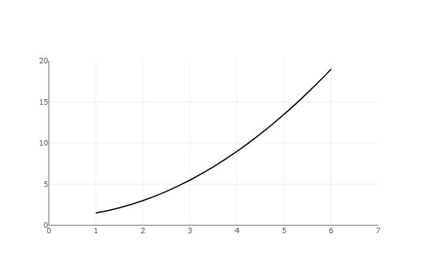

A Riemann Sum is simply an approximation of the area under a curve. Let's say that we want to find the area under this curve.
We may not know how to find this area, but we know that the area can approximately equal the area of the rectangle
with same height and width.
Of course, the area of this rectangle is an overapproximation. So how do we make our approximation more accurate?
We just add more rectangles (while decreasing the width and height)!

The sum of the areas of the rectangles seem to approximate the area under the curve better and better, and this
is exactly what the Riemann Sum is, the sum of the areas of these rectangles.
What are the different types of Riemann Sums?
In our example, we made a deliberate choice to place the height of our function at the right endpoint of our
rectangles. But what if we chose to use the left endpoint?
This is what it would look like:
It looks different than the right endpoint approximation, but it still looks like a decent approximation of the area. But now it's clearly
an underapproximation. In fact, if the curve is increasing on the interval for which you want to find the area, a right endpoint Riemann sum
will always overapproximate the area, whereas a left endpoint Riemann Sum will always underapproximate the area.
Can you see why?
And if the curve is decreasing then a right endpoint Riemann Sum will underapproximate,
whereas the left-endpoint Riemann Sum will overapproximate.
A Riemann Sum doesn't need not be just rectangles. You can create a Riemann Sum using
trapezoids to approximate the area as well!
The width of each rectangle need not be the same either, but keeping the width uniform is easy to work with.
There's also the midpoint Riemann Sum, which is where the height of your rectangle is equal to
f(0.5 × (x1 + x2)) where x1 and x2 are the x-coordinates of your rectangle and f is the curve.
So what happens when you have infinitely many rectangles?
As the number of rectangles goes to infinity, the Riemann Sum is equal to the area under the curve!
This becomes our first notion of the definite integral, the area between the curve and the x-axis.
*Inspiration taken from Khan Academy*